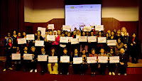
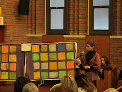

|
|

ستایش بین المللی از زنان ایران در سازمان ملل متحد بخاطرشجاعت و رهبری در طرح موضوع عدم بهره مندی از حق مشارکت در سی اس دبیلیو
سه شنبه16 اسفند 1390
زنان ایران و کمیسیون مقام زن: گزارشی از نشست حق مشارکت زنان در سی اس دبیلیو با تاکید بر مورد ایران، در مقر سازمان ملل متحد، نیویورک، ۱۰ اسفند ماه ۱۳۹۰
پانلیست ها:شارلت بانچ ، دانیلا کلمبو ، مارینا دورانو ، آنالیا پانچس زاده ، هوزه لوییس دایاز
تسهیلگر:سوزانا سیرکین
نشست حق مشارکت زنان در سی اس دبیلیو با سخنان سوزانا شروع شد که اعلام کرد که موضوع بحث نشست، مشارکت در گفتگوهای بین المللی بطور عام و مورد ایران بطور خاص است و با اینکه زنان و بخشی از جامعه مدنی در همه جهان بخصوص از ایران نتوانستند امروز با ما باشند، اما آن ها بی صدا نیستند و هدف ما از اینگردهمایی این است که شجاعت، نگرانی ها و صدای آن ها را به گوش دنیا برسانیم. حق مشارکت در بحث های جهانی در حوزه برابری جنسیتی، فقر، توسعه، حقوق بشر، صلح و امنیت کاملا نیازمند گفتگو است و این گفتگو نه تنها باید در میان دولت ها جریان یابد بلکه در میان اعضای جامعه مدنی نیز امری لازم و ضروری است. وی با اشاره به سخنان خانم باشلت در روز گشایش سی اس دبیلیو در ۲۷ فوریه که گفته بود مشارکت جامعه مدنی برای رشد در همه سطوح بنیانی است، تاکید کرد که هیچ کشوری نمی تواند مردم خودش را از مشارکت در بحث های جهانی منع کند، و این موردی است که امروز ما اینجا در باره آن به بحث می پردازیم. سوزانا اظهار امیدواری کرد که در این نشست را ه هایی پیدا کنیم که هیچ دولتی نتواند در آینده مردم خودش را از مشارکت منع کند و یا آن ها را مورد آزارو اذیت قرار بدهد.

پس از سخنان سوزانا، فیلم صداهای غائب به مدت ۱۲ دقیقه به نمایش در آمد که در آن خانم شیرین عبادی، برنده جایزه صلح نوبل، و خانم فرهنگ خواه، پروین بختیار نژاد، خدیجه مقدم، رضوان مقدم، آسیه امینی، و لیلا اسدی، فعالان شناخته شده حقوق زنان در ایران که قبلا در سی اس دبیلیو شرکت کرده بودند و در حال حاضر در خارج از کشور بسر می برند، در باره ارزش ها ، سختی ها و تجربیات خود گفته وخواستار تضمین حق شرکت در سی اس دبیلیو توسط سازمان ملل شدند. در این فیلم، دانیلا کلمبو نیز از سوابق همکاری با ایران و فعالیت های آیدوس در سه سال گذشته برای کمک به زنان مستقل ایرانی برای شرکت در نشست صحبت کرده بود. همچنین بخشی از بیانیه جمعی از زنان فعال ایران در این فیلم مستند شده است که تمایل داشتند در این نشست شرکت کنند، اما تصمیم گرفتند که با ارسال بیانیه ای مکتوب اعضای سی اس دبیلیو و شرکت کنندگان در آن را خطاب قرار دهند. پس از پخش فیلم، حضار برای اعلام همبستگی با زنان ایران در حق شرکت آن ها در سی اس دبیلیو از جای برخاستند.
سپس دانیلا کلمبو ازفمینیست های شناخته شده ایتالیایی و از فعالان بین المللی زنان در توسعه، از زمینه های شکل گیری این نشست گفت. وی به بیانیه جمعی از زنان ایران خطاب به شرکت کنندگان در سی اس دبیلیو اشاره کرد و اتفاقاتی را که در سال ۲۰۱۱ برای دو تن از شرکت کنندگان سابق یعنی مریم بهرمن و فرانک فرید رخ داده بود، تشریح کرد. و توضیح داد که پس از بازداشت مریم بهرمن به اتهام شرکت در سی اس دبیلیو، ائتلاف بین المللی در حمایت از حق زنان در شرکت در سی اس دبیلیو شکل گرفت وپس از آزادی مریم و فرانک، این ائتلاف در پاسخ به خواسته زنان ایران، نسبت به سازماندهی این نشست اقدام کرد. زنان ایران حتی حاضر بودند که خطرات بازداشت را به جان بخرند اما در ارزیابی نهایی وقتی که دیدند که سفر آن ها به نیویورک مانع می شود که همین خدمات اندکی که به زنان می دهند، با مشکل روبرو شود، تصمیم گرفتند که بیانیه داده و از شرکت کنندگان در سی اس دبیلیو بخواهند که صدای آن ها باشند.
پس از دانیلا کلمبو، شارلت بانچ از اساتید برجسته و شناخته شده حوزه زنان و از بنیاینگذاران کانون رهبری جهانی زنان در دانشگاه راتگرز، نویسنده و برنده جوایز معتبر بین المللی به سوالی که از سوی سوزانا درمورد وضعیت مشارکت زنان در نشست های بین المللی بطور عام مطرح شد، پرداخت. شارلت درآغاز سخنان خود زنان ایران را بخاطر طرح موضوع عدم بهره مندی خود از حق شرکت در سی اس دبلیو و ساخت این فیلم ستایش کرد و گفت که این نشان دهنده نمونه ای از هویت رهبرانه خارق العاده و شجاعانه جنبش زنان در ایران است که تصمیم گرفتند که این موضوع را در سطح بین المللی طرح کند. شارلت تاکید کرد که متاسفانه نبودن زنان ایران در این نشست مانع می شود که جنبش های بین المللی زنان از آنان بیاموزند. در چند سال گذشته حضور زنان از ایران باعث شد که فعالان بین المللی شروع کنند به درک اینکه چه جنبشی در ایران جریان دارد و زنان ایران چه فعالیت هایی انجام داده اند. و این همان چیزی است که سی اس دبیلیو و کنفرانس های بین المللی زنان را قادر می سازد که از جنبش ها بیاموزند و جنبش ها فعالیت های خودرا بر اساس این توانایی ها بسازند. عدم مشارکت زنان از ایران یک فقدان کامل است. اما تصمیم آن ها برای طرح این موضوع به این روش گام بسیارمهمی است. شارلت تاکید کرد که موضوع را باید فراتر از این اتاق برد. شارلت گفت که البته برای جنبش زنان این موضوع یک موضوع تازه ای نیست. و این فقط موضوعی نیست که توسط ایران ایجاد شده باشد. این پدیده در کنفرانس سال ۱۹۹۵ در کنفرانس پکن نیز ایجاد شد و زنان دچار مشکلات زیادی بادولت چین بودند و یا مشکلاتی که هر ساله با دولت امریکا برای گرفتن ویزا برای ورود به این کشور زنان روبرو هستند. مرکز رهبری جهانی زنان با دولت آمریکا برای گرفتن ویزا برای آمدن زنان به این کنفرانس چالش زیادی دارد . ایشان گفت که باید این موضوع ایران را که فرم متفاوتی است، در سازمان ملل و در کمیساریای عالی حقوق بشر و نهاد زنان بطوری پیش برد که حقوق همه، هم زنان و هم مردان، اعضای جامعه مدنی که امروز یک بخش عمده در بحث های بین المللی هستند، حفاظت بشود تا بتوانند در بحث های بین امللی مشارکت کنند. وی تاکید که چگونگی پیشبرد این امر سوالی است که برای ایشان مطرح است. و طرح موضوع در این نشست باعث می شود که از نبود زنان ایران برای حضور وسیعتر همه زنان بهره بگیریم.
مارینا که در حوزه توسعه اقتصادی و زنان در پروژه های منطقه ای فعالیت می کند، در ارتباط با موضوع امسال نشست سی اس دبیلیو که حوزه فقر و زنان می باشد، نسبت به عدم حضور زنان از ایران و آسیب های آن در فقر زدایی و توسعه گفت. وی تاکید کرد که بیشتر مواقع سیاستگزاران اقتصادی به مشارکت ارزش لازم را نمی دهند. در بسیاری از کشورها در آسیا گفته می شود که برای توسعه نیازی به دموکراسی نیست، می توان رشد اقتصادی بدون دموکراسی داشت مانند چین. اما این یک شکست در ارزشگذاری به مشارکت، بحث و گفتگو، ومنطق جمعی است که همه این ها عوامل سازنده توسعه هستند. عدم توجه به این موارد ناشی از یک نگرش بسیار کوتاه نظرانه از توسعه است. در حقیقت شکست در دموکراسی باید بعنوان شکست در توسعه تلقی بشود. و امروز عدم حضور زنان ایران که ما نمی توانیم حرف های آن ها را بشنویم و این که توسعه برای زنان روستایی چه می تواند باشد، یک نقص است. هم برای زنان روستایی و هم بطور عمومی مشارکت همه که از تجربیات خودشان بگویند تواند به بقیه کشورها کمک کند.

هوزه از امنستی تاکید کرد که وضعیت حقوق زنان در ایران انعکاسی از وضعیت حقوق بشر در ایران است. همانطور که در گزارشی که در این چند روز توسط امنستی منتشر شده، دیده می شود،وضعیت حقوق بشر و حقوق زنان در ایران بدتر شده است. نبود صدای زنان ایران در اینجا، نشان دهنده سیاست مقامات برای ساکت کردن صداها وجلوگیری از انتشار اطلاعات در باره وقایع ارتجاعی به جامعه بین المللی است. نبود زنان ایرانی در اینجاباید باعث بشود که نه تنها وضعیت خاص ایران بلکه بعنوان یک نمونه قوی مورد توجه قرار بگیرد وحرکتی بوجود بیاید که این موارد نه تنها در ایران بلکه در سراسر جهان محکوم شوند. نباید اثر مخرب این اتفاقات را دست کم گرفت، چون که دولت ها از هم یاد می گیرند و در حوزه های وسیعی اعم از فعالان جنبش زنان، حقوق بشرو جامعه مدنی از آن استفاده می کنند. کارهایی می شود در این زمینه ها انجام داد که یکی از کارها همین نشستی است که به این بحث می پردازد.
آنالیا، چگونگی ورود اوید را به این ائتلاف بین المللی تشریح کرد و گفت که در مورد آنچه که در ایران اتفاق می افتد بخصوص در حوزه زنان مدافع حقوق بشر بعد از مشکلی که برای مریم بهرمن پیش آمد، اوید مستقیما وارد این ائتلاف شد. او تاکید کرد که همبستگی بین المللی در مورد شرایطی که در ایران بخصوص برای منزوی کردن زنان مدافع حقوق بشر وجود دارد بسیار مهم است. از طرف دیگر این انزوا امکان همبستگی بین المللی را با مشکل روبرو می کند و اینکه زنان مدافع حقوق بشر بدانند که تنها نیستند. اوید با این موضوع تنها در ایران روبرو نیست. اما خواهران ما در ایران آأن را مطرح کردند تا همه بدانند که چطور از آن ها وقتی که آن ها غائب هستند حمایت کنند و نیازهای آن ها را مورد توجه قرار بدهند. هیچکس نمی تواند جایگزین آن ها شود اما همه می تواند کاری کنند که صدای آن ها شنیده شود.
سوزانا یکبار دیگر بر اهمیت استفاده از شبکه های اجتماعی برای طرح موضوع اشاره کرد و اینکه با استفاده از آن ها می توان صداهای حمایت از سازمان ملل را به ایران رساند و صدای های زنان ایران را به سازمان ملل، هر چند همه کسانی که امروز در این نشست هستند نمی توانند صدای مستقیم زنان ایران را بشنوند اما آن ها از طریق یک بیانیه بسیار قوی با همه شرکت کنندگان صحبت کردند که ترجمه آن در این نشست توزیع شده است.
سوزانا سپس وارد مرحله بعدی گفتگو شد اینکه جامعه بین المللی برای تضمین حق شرکت زنان بدون ترس و واهمه چه می تواند بکند.
هوزه در پاسخ به این سوال گفت که یک کار همین است که الان همه دور هم جمع شده اند و این موضوع را جریانسازی می کنند. در مواردی مثل مریم و فرانک ، امنستی از شبکه های خود که بیش از سه میلیون عضو دارد استفاه می کند.امنستی سابقه بهره گرفتن از این شبکه را در مواردی همچون دفاع از کمپین یک میلیون امضا بکار برد. هوزه تاکید کرد که علاوه بر کمیپن های بین المللی، می توان از مکانیزم هایی در یو ان هم بهره برد.
شارلت در پاسخ به سوال سوزانا که پرسید که علاوه بر تقاضای خانم شیرین عبادی که خواستار صدور قطعنامه ای ازسوی مجمع عمومی سازمان ملل شده اند، چه کارهای دیگری می توان انجام داد، گفت که قطعنامه مجمع عمومی برای اینکه مشارکت زنان تضمین بشود بسیار عالی و ایده آل است. وی تاکید کرد که این ایده عالی است. اما می توان کارهایی کرد که به سمت این قطعنامه تضمینی نزدیک شد. باید از گزارشگر ویژه مدافع حقوق بشر در این مورد مشخص خواست که گزارش بدهد. و بعنوان بخشی از آن نیز بایداز دفتر نهاد زنان سازمان ملل خواست که در همآهنگی با کمیساریای عالی حقوق بشردر برنامه های خود در مورد مداخله جامعه مدنی به این موضوع اشاره کند و باید این را در برنامه نهاد زنان سازمان ملل قرارداد. و همچنین در حوزه کار گزارشگر ویژه و کمیسیاری عالی باید این موضوع در دستور کار قرار بگیرد.از نهاد زنان سازمان ملل باید خواست که موضوع را به دبیر کل سازمان ملل گزارش بدهد.
سوزانا نیز پیشنهاد کرد که برای اینکه مشارکت جامعه مدنی در سی اس دبیلیو را تضمین کرد باید هر دولتی که در سی اس دبیلیو عضویت دارد، در صورتی که دولتی زنان کشورخود را مورد آزار و اذیت قرار می دهد، باید عضویت آن دولت را در سی اس دبیلیو زیر سوال برد.
آنالیا نیز گفت که باید یادآوری کنیم که حق مشارکت در سی اس دبیلیو و در سایر نهادهای سازمان ملل در همه اسناد و کنوانسیون ها و قطعنامه های بین المللی بصورت پنهان آورده شده است و با بیانیه ای از سوی نهاد زنان سازمان ملل می توان این تضمین را بصورت روشن و صریح بیان کرد. حالا که مجموعه دستور العمل هایی برای مدافعان حقوق بشر داریم خب باید یک دستورا لعملهایی هم برای زنان مدافع حقوق بشر داشته باشیم و از جمله موارد مربوط به زنان ایران را در آن پوشش بدهیم. باید به کمپین های بین المللی ادامه داد تا زنان در ایران فکر نکنند که تنها هستند. و برای این کار باید از شبکه های اجتماعی استفاده کرد.
دانیلا نیز در پایان گفت که فعالان زن در ایران باید بدانند که در هر شرایطی ما در کنار آن ها هستیم و آن ها را رها نخواهیم کرد.
سپس نوبت به پرسش و پاسخ و پیشنهادات رسید که در آغاز معاون سنای پارلمان ایتالیا از اینکه در این نشست بسیار آموخت تشکر کرد. خانمی به نمایندگی از خانم دکتر شیدا که نتوانسته بود ویزا دریافت کند و به سی اس دبیلیو بیاید پیام وی را قرائت کرد که در این پیام خواسته بود که از حق او برای شرکت در سی اس دبیلیو حمایت شود. که این موضوع از قبل هم مورد توجه پانلیست ها بود و شارلت آشکارا بعنوان یکی از معضلات به ویزای امریکا اشاره کرده بود. و پس از این پیام باز هم برآن تاکید شد که هیچکس نباید از حضور در مجامع بین المللی منع شود. لازم به ذکر است که خانم دکتر شیدا که هر ساله بعنوان نماینده جامعه مدنی در سی اس دبیلیو شرکت می کند، در سال های ۲۰۱۰ و ۲۰۱۱ نسبت به برهم زدن نشست مربوط به زنان ایرانی اقدامات ناشایستی انجام داده بود که در سطح سی اس دبیلیو از اقدامات بی سابقه بوده است و باعث بحث ها و گفتگوهای بسیاری در میان شرکت کنندگان شده بود، چرا که سی اس دبیلیو مکانی برای گفتگو است نه هیاهو و فیلمبرداری برای بهره برداری های سیاسی. اما این از نظر برگزارکنندگان این نشست یک دستآورد مهم بود که خانم دکتر شیدا برای رساندن پیام خود از تریبون این نشست استفاده کرد و پانلیست ها بدون هیچ تبعیضی از حق او دفاع کردند.
سپس در پایان پیام نهاد زنان سازمان ملل توسط نماینده رسمی این نهاد، خانم لوپا بانرجی به این شرح قرائت شد: نهاد زنان سازمان ملل، از حق همه اعضای جامعه مدنی در مشارکت بدون ترس و واهمه دفاع می کند. سی اس دبیلیو یک مکان عمومی است که در آن زنان از سراسر جهان آزادانه شرکت می کنند، و باید همه افراد این امکان را در هر کشوری داشته باشند. هیچ زنی نباید بخاطر شرکت در سی اس دبیلیو با مشکل روبرو شود.
آخرین پیام، پیام نهاد زنان سازمان ملل به نشست حق شرکت در سی اس دبیلیو، نمونه ایران بود که به این شرح توسط خانم لوپا بانرجی قرائت شد و مورد سپاس و قدردانی شرکت کنندگان قرار گرفت:
”نهاد زنان سازمان ملل از حق همه اعضای جامعه مدنی در مشارکت بدون ترس و واهمه دفاع می کند. سی اس دبیلیو یک مکان عمومی است که در آن زنان از سراسر جهان آزادانه شرکت می کنند و باید همه افراد این امکان را در هر کشوری داشته باشند. هیچ زنی نباید بخاطر شرکت در سی اس دبیلیو با مشکل روبرو شود.”
لازم به ذکر است که در جلوی سن سالن پرده چل تکه ای از داستان های زنان ایرانی که از چند همسری رنج برده اند، به نمایش گذاشته شده بود و بروشروهای مربوط به لایجه حمایت از خانواده که در واقع مروج چند همسری است توزیع می شد و کسانی که در جمع آوری این داستان ها در کمپین نه به لایحه خانواده شرکت کرده بودند، به تشریح این داستان ها پر داختند.
در پایان تعدادی از شرکت کنندگان به درخواست امنستی عکس های گروهی اعلام همبستگی با زنان در ایران گرفتند.
معرفی پانلیست ها:
شارلت بانچ، استاد برجسته مطالعات زنان و موسس کانون رهبری جهانی زنان در دانشگاه راتگرز، از فعالان و سازماندهندگان حقوق زنان و حقوق بشر، نویسنده و برنده جوایز متعدد که در طراحی برابری جنسیتی سازمان ملل نقش عمده ای ایفا می کند.
دانیلا کلمبو، از فعالان پیشتاز جنبش زنان در دهه ۱۹۷۰ در ایتالیا،روزنامه نگارحرفه ای و رئیس انجمن ایتالیایی زنان در توسعه که در کشورهای متعدد آفریقایی، آسیایی و خاورمیانه پروژه های موفق توسعه زنان را به پیش می برد. دانیلا از طرف یو ان اف پی ای برای مشاوره در پروژه حقوق باروری در ایران به مدت دو سال فعالیت کرد.
مارینا دورانو قتصاددان و همآهنگ کنننده تحقیقات دان، شبکه فعالان زن و دانشگاهیان جنوب. وی مقالات بسیار زیادی در حوزه جنسیت و اقتصاد نوشته است که یکی از موارد عمده آن به تجارت آزاد جهانی و اثرات جنسیتی آن مربوط می شود.
آنالیا پانچس زاده، مدیر بخش زنان مدافع حقوق بشر در شبکه اوید است که شبکه ای است برای توسعه و حقوق زنان.
هوزه لوییس دایاز نماینده امنستی اینترنشنال در سازمان ملل ـ دفتر نیویورک
سوزانا سیرکین ، معاون انجمن پزشکان برای حقوق بشر است که بیش از ۲۵ سال از زمان تاسیس این انجمن در برپایی کمپین های پزشکان برای حقوق بشرعلیه آزار و اذیت پرسنل بخش خدمات بهداشتی در کشورهای مختلف جهان فعالیت کرده است.